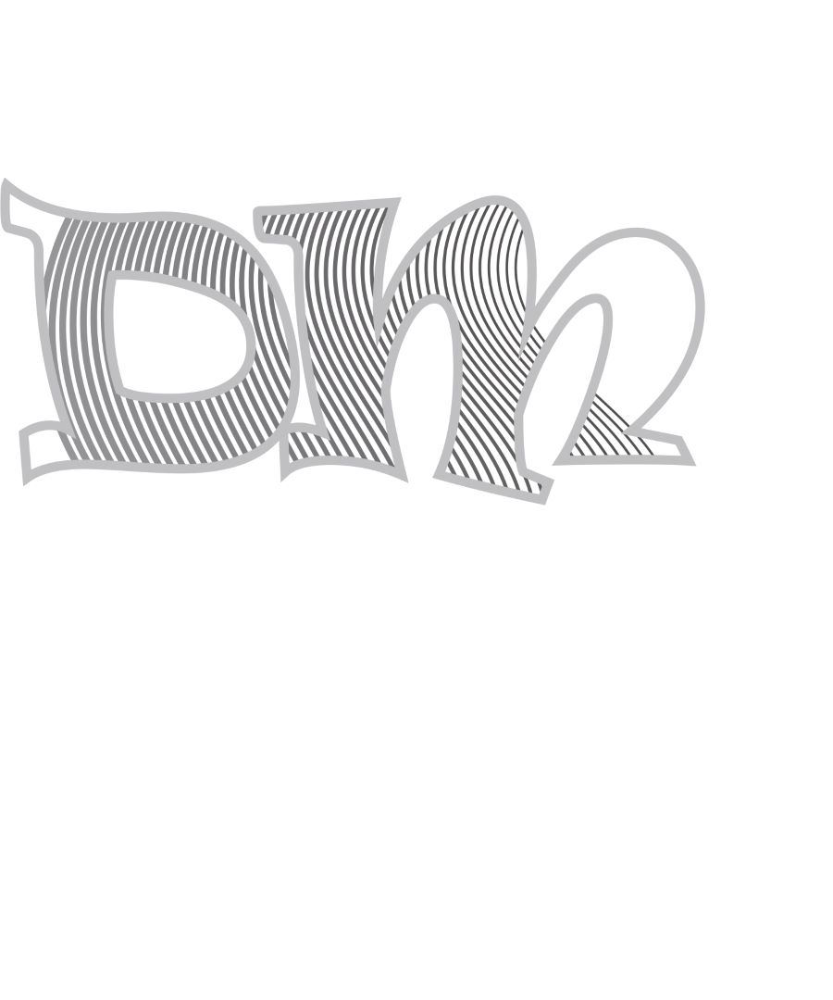

Ovdje ćete vidjeti slike i multimedijiske elemente zadataka s vježbi i projektnih zadataka koje sam radio tijekom semestra na ovom kolegiju.
U programu FontForge napravio sam vlastiti font za slova u svom imenu i prezimenu te za slova s dijakritičkim znakovima.
Bezierova krivulja je parametarska krivulja definirana sa 4 točke i predstavlja temelj današnje vektorske grafike. U programu Illustrator kreirao sam proizvoljan broj krivulja čije su točke poravnate prema mreži koordinatnog sustava, definirao im boju i debljinu obruba te između njih napravio interpolaciju (Blend). Koristeći vlastiti font s prošle vježbe preko krivulja sam ispisao tekst i od njega napravio masku. Vodio sam računa o veličini teksta i njegovom položaju u odnosu na krivulje kako bi se maska što bolje vidjela.
U programu Illustrator napravio sam primjere sa multipliciranim objektima nacrtanima alatom Pen. Koristio sam tehniku kopiranja tipkom Alt (Duplicate) i više puta kopirao oblike te ih aplicirao drugačijim bojama koje sam kreirao u novoj Color grupi (Swatch). Još sam koristio rotacije, scale, transparenciju, multipliciranje oblika… Na 1. slici objekt je nacrtan kao kontura zadane slike predloška, dok je na 2. slici je slobodno nacrtan bez predloška.
Tema ove vježbe je izrada složenih objekata koji se sastoje od više staza metodama spajanja (Unite/Compound path) ili oduzimanja oblika (Difference/Subtract). Također se radi apliciranje različitih vrsta gradijenata (linearni, radijalni, mesh...) od dvije ili više boja te transparencija i poredak slojeva u izradi složene grafike. Slika čaše predstavlja grafiku kreiranu iz uputa, dok je slika cvijeta u vazi moj vlastiti kreirani složeni objekt u kojem sam koristio tehnike spajanja i izrezivanja objekata te primijenio različite vrste gradijenata i transparencije.
Retuširao sam slike u programu Adobe Photoshop. Neke od korištenih tehnika su: selekcija (Lasso Tool), uklanjanje nedostataka na slici zamućivanjem (Dust&Scratches, Median), kloniranjem (Clone Stamp, Heal...),kopiranjem selekcije u layere, zatim lokalne i globalne korekcije boja (Burn/Dodge brush, Levels, Brightness/Contrast), tehnike digitalnog retuširanja fotografija za postizanje realističnog efekta.

Radio sam u Adobe Photoshopu sa tehnikama neinvazivnog koloriranja slike koje se može primijeniti na crno-bijele slike kao na slici dječaka te na slike u boji kojima želimo promijeniti nijansu određenih područja kao na svojoj slici. Selekcijom željenih dijelova slike stvorio sam maske kojima skrivamo ili otkrivamo efekte kolorizacije. Boja se aplicira na zaseban sloj (layer) kako ne bismo uništili originalne tonove i kako bismo mogli lakše napraviti promjene u kasnijim fazama obrade slike. Selekcije sam izvodio i popravljao ručno kako bi što preciznije izdvojio željenu boju iz pozadine jer o tome najviše ovisi kvaliteta slike.

Zadatak vježbe bio je fotomontaža, tj. kombiniranje više fotografija izrezivanjem dijelova različitih slika i spajanjem u jednu cjelinu. Pritom je najvažnije kvalitetno selektirati dijelove koje želimo izrezati kako bi se što bolje uklopili u finalnu sliku. Primjenjivao sam različite tehnike selektiranja jednostavnih i složenih oblika. Jednostavne tehnike selekcije uključuju alate kojima selektiramo poligone i oštre rubove objekata, a složenije tehnike selekcije podrazumijevaju selekciju putem kanala slike ili crtanje maski brush i eraser alatima u modu quick mask. Vježba se bavi i izradom i uklapanjem sjena objekata koje sam uvezao izrezivanjem i korekcijom boja kako bi se pojačao dojam realističnosti.
Ova vježba se bavi osnovama obrade video materijala i uvođenjem multimedije u video projekt. Kinemagraf ili eng. cinemagraph je video isječak čija se sekvenca ponavlja u beskonačnost, najčešće u GIF formatu, a u kompoziciji spaja pokretnu i statičnu grafiku (sliku i video). Samo je mali dio slike animiran, tj. pokretan (grane i lišće stabla), dok je većina grafike statična. Dakle, rezultat vježbe je vlastiti kinemagraf čija je karakteristika spajanje statične i pokretne slike. Snimio sam video. Za obradu statične slike te krajnji izvoz, koristio sam Photoshop, a obradu video isječka radio sam u Shotcutu.

TEMA vježbe bila je rezanje i spajanje video isječaka, video efekti, brisanje i dodavanje zvuka te dodavanje i obrada teksta. Izrezao sam dva video isječka, skinuo im zvuk i dodao efekte kontrast boja, saturacija (crno-bijelo), fade in (opacity), rotacija slike, ulaz i izlaz slike, usporavanje te statični i pomični tekst. Dodao sam i drugačiji zvuk.
Ovaj multimedijski HTML dokument stvorio sam u Notepad++. Multimedijski sadržaj koji sam prenio preko weba odnosi se na tekst, sliku, video i zvuk. HTML sadržaja sam stilizirao jezikom CSS (Cascading Style Sheets) kojim određujemo veličine, pozicije, boje i druge stilske karakteristike sadržaja.
web stranica na githubuU Adobe Illustratoru sam pomoću alata za crtanje Bezierovih krivulja iscrtao sliku prema zadanom predlošku. Koristio sam tehnike naučene na prethodnim vježbama. U sliku sam uklopio riječ Voće koju sam kreirao s vlastitim fontom u FontForgeu. Unutar fonta sam interpolirao linije čije boje prate ugođaj slike.

U Adobe Photoshopu kreirao sam sliku kao kompoziciju više fotografija koristeći tehnike retuširanja, fotomontaže i koloriranja.